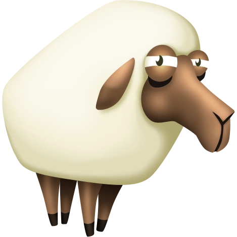

In addition to crops, another main feature of Hay Day is animals. The animals easiest to get are chicken, pig, and cow, here is the wiki page for full list of animals . With these animals, you can collect the products they produce, like eggs and milk, to use to bake different things. You can make different goods with the animal products by placing them in the machines like the bakery which will make bread. On this page I will be discussing the most important animals. How animals work is that the player needs to produce animal feed in the mills that they can purchase for 3,200 gold. Then, using various crops, the player must make animal feed specific to the animal they are trying to feed. After a certain amount of time (ranging from 30min to 8 hours and once again depending on the animal) the player can collect the product.
This table lists the core animals and various aspects of them.
| animal | level unlocked | image | product produced |
|---|---|---|---|
| chicken | 1 | eggs | |
| cow | 6 | milk | |
| pig | 10 | bacon | |
| sheep | 16 |  | wool |